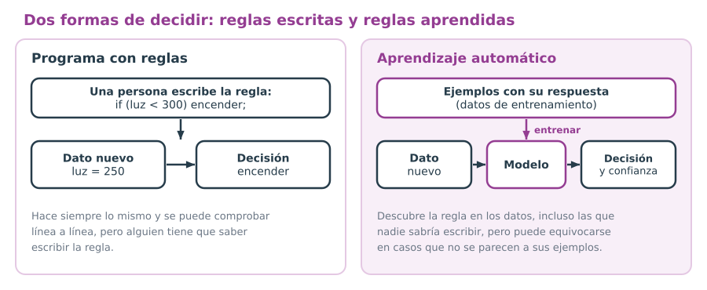
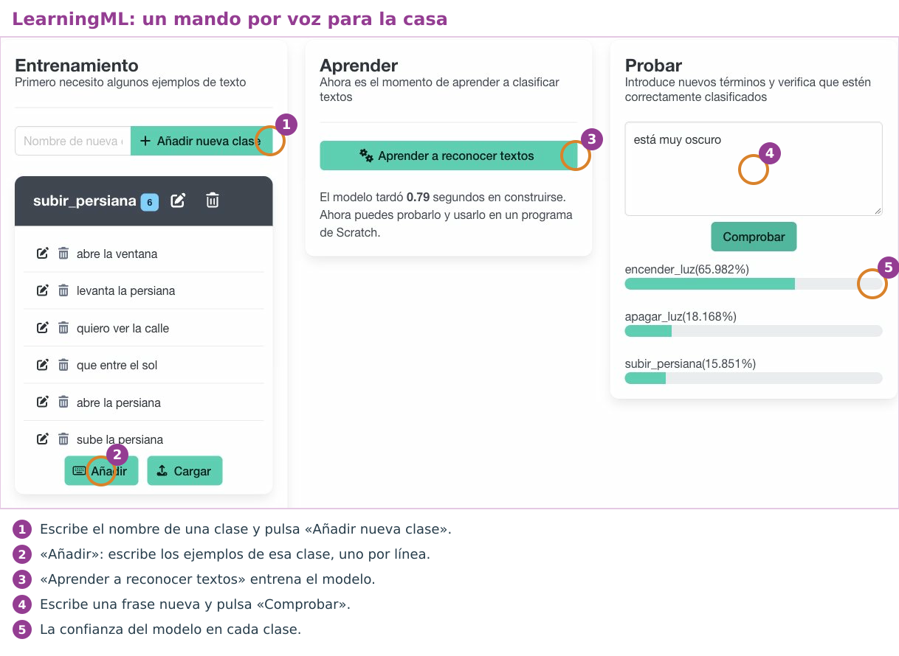

Qué vas a conseguir en esta página
Entender en qué se diferencia un sistema que aprende de los programas con reglas fijas que has escrito en esta unidad, conocer casos reales en los que la inteligencia artificial y otras tecnologías nuevas ya controlan máquinas y robots, y saber qué aportan, qué límites tienen y qué dice la ley europea sobre ellas.
Reglas escritas y reglas aprendidas
Todos los programas de esta unidad siguen reglas que has escrito tú: la farola de la página 6. Entradas analógicas y sensores se enciende si la luz baja de un umbral que elegiste mirando el monitor serie. Funciona porque la regla es sencilla y alguien sabe escribirla. Pero hay decisiones para las que nadie sabe escribir la regla: ¿qué if dice si una aceituna de una foto está picada o si una frase significa «enciende la luz»?
El aprendizaje automático (en inglés machine learning), la parte de la inteligencia artificial que más se usa hoy en el control, le da la vuelta al problema: en vez de escribir la regla, se dan al ordenador muchos ejemplos con su respuesta correcta (los datos de entrenamiento) y un algoritmo busca por sí mismo la regla que mejor los separa. El resultado se llama modelo. Ante un dato nuevo, el modelo da una respuesta y una confianza: cuánto se fía de ella.

Una IA no es un controlador mágico
En un sistema de control, el modelo de IA suele ocupar el lugar del sensor inteligente (reconoce lo que ve una cámara o lo que dice una persona) o del controlador (decide qué hacer). El resto del lazo es el de siempre: sensores, actuadores, realimentación y, sobre todo, un control de seguridad que no depende de la IA.
Tecnologías emergentes en el control: casos reales
Se llaman tecnologías emergentes las que están empezando a usarse de forma generalizada y van a cambiar cómo se hacen las cosas. Estas son algunas de las que ya están en fábricas, campos y calles:
Siete casos
| Tecnología | Cómo funciona | Qué aporta | Su límite |
|---|---|---|---|
| Visión artificial en control de calidad | Una cámara fotografía cada pieza o cada fruta que pasa por la cinta y un modelo entrenado con miles de fotos decide si es buena; un actuador (un soplador, una compuerta) aparta las malas. | Revisa todas las piezas, sin cansarse, a gran velocidad. Así se clasifican, por ejemplo, aceitunas y cítricos. | Solo reconoce bien lo que se parece a sus fotos de entrenamiento: un defecto nuevo o una luz distinta lo confunden. |
| Mantenimiento predictivo | Sensores de vibración, temperatura o consumo en motores y bombas; un modelo aprende cómo «suena» la máquina sana y avisa cuando algo cambia. | Se arregla antes de que se averíe y se evitan paradas. | Necesita datos de mucho tiempo y de averías reales, que a veces no hay. |
| Robots colaborativos (cobots) | Brazos robóticos con sensores de fuerza y cámaras que trabajan junto a las personas, sin jaula de seguridad. | Hacen la parte pesada o repetitiva y la persona, la que pide criterio. | Van más despacio que un robot industrial, para no hacer daño si chocan. |
| Robots móviles autónomos | Vehículos de almacén con escáneres láser (LiDAR) y cámaras que hacen un mapa, se sitúan en él y esquivan obstáculos. | Llevan mercancía sin raíles ni cables en el suelo. | Los entornos que cambian mucho (personas, cajas por el suelo) los ralentizan. |
| Gemelo digital | Un modelo virtual de una máquina o de una planta entera que se alimenta con los datos reales de sus sensores (la telemetría de la página 9). | Se pueden probar cambios y prever averías en el modelo sin tocar la instalación. | Solo es útil si el modelo es fiel a la realidad, y mantenerlo cuesta. |
| IA en el propio dispositivo | Modelos pequeños que caben en un microcontrolador y deciden allí mismo, sin enviar los datos a la nube: reconocer una palabra, una vibración, un gesto. | Responde al momento, funciona sin conexión y los datos no salen del aparato. | Solo caben modelos sencillos. |
| Asistencia a la conducción | Cámaras y radares detectan coches, peatones y líneas; el coche frena solo o corrige el volante. | Evita accidentes por despistes. | Puede fallar con lluvia, niebla o líneas mal pintadas: el conductor sigue al mando. |
Fíjate en que todos son sistemas de control como los de la página 1. Sistemas de control: hay sensores, un controlador que decide y actuadores. La novedad está en cómo se toma la decisión y en la cantidad de datos que se usan para ello.
Ahora tú: analiza un caso
No se entrega ni cuenta para la nota: sirve para comprobar si lo has entendido.
Una cooperativa instala una clasificadora de aceitunas: una cinta lleva las aceitunas bajo una cámara, un modelo de visión artificial decide si cada una está sana, picada o con golpes, y unos chorros de aire las desvían a tres cajas distintas.
- ¿Cuál es el sensor, cuál el controlador y cuál el actuador?
- ¿Con qué datos se ha entrenado el modelo y quién ha puesto las respuestas correctas?
- ¿Qué pasa si el modelo se equivoca con una aceituna? ¿Y si se equivoca con muchas porque ha cambiado la luz de la nave?
- ¿Qué haría la cooperativa para darse cuenta a tiempo de que el modelo está fallando?
Ver una solución
- Sensor: la cámara (y el modelo, que convierte la foto en «sana», «picada» o «con golpes»). Controlador: el programa que, según la clase y la posición de la aceituna en la cinta, decide qué chorro abrir y cuándo. Actuadores: las válvulas de los chorros de aire.
- Con miles de fotos de aceitunas que personas expertas han clasificado a mano. Si esas personas se equivocaron o faltaban fotos de algún defecto, el modelo aprende el error.
- Una aceituna mal clasificada importa poco. Pero si cambia la luz, el modelo puede fallar con muchas a la vez sin que nadie lo note: es un error de los datos, no del programa.
- Revisar a mano cada cierto tiempo una muestra de cada caja y comparar (supervisión humana), vigilar la confianza media del modelo y volver a entrenarlo con fotos nuevas cuando cambian las condiciones.
Límites y riesgos de la IA en el control
- Solo sabe lo que ha visto. Ante un caso distinto de sus ejemplos, el modelo responde igual, a veces con mucha confianza y equivocándose. No «sabe que no sabe».
- Hereda los errores de los datos. Si los ejemplos están mal etiquetados o no representan todos los casos, el modelo aprende esos fallos (es lo que se llama un sesgo).
- Es difícil de explicar. Un
ifse puede leer; un modelo con millones de números internos, no. Saber por qué decidió algo, o asegurar que nunca hará algo peligroso, es mucho más difícil. - Cambia si se vuelve a entrenar. El mismo programa siempre hace lo mismo; un modelo reentrenado puede decidir distinto ante el mismo dato.
- Responsabilidad, empleo y energía. ¿Quién responde si un sistema automático causa un daño? ¿Qué pasa con los puestos de trabajo que sustituye? Y entrenar modelos grandes consume mucha electricidad.
Por eso, en las máquinas, la regla de oro es que la IA puede proponer o decidir lo normal, pero la seguridad la garantiza siempre una capa independiente y comprobable: un paro de emergencia cableado, un control local con reglas fijas como el de la práctica de la página 9. IoT, telemetría y SCADA, y una persona que supervisa.
Qué dice la ley europea
- El Reglamento de Inteligencia Artificial de la Unión Europea (Reglamento (UE) 2024/1689) clasifica los sistemas de IA según su riesgo. Algunos usos están prohibidos desde 2025. Los de alto riesgo, como la IA que hace de componente de seguridad de una máquina, tendrán que cumplir requisitos de gestión de riesgos, calidad de los datos, registro de lo que hacen y supervisión humana. Una modificación de 2026 (Reglamento (UE) 2026/1744) retrasó esas obligaciones hasta finales de 2027 y, para las máquinas y otros productos, hasta 2028.
- El nuevo Reglamento de Máquinas (Reglamento (UE) 2023/1230), que se aplica desde 2027, tiene en cuenta por primera vez las máquinas con componentes de seguridad que aprenden y cambian su comportamiento: tienen que pasar la evaluación de un organismo independiente antes de venderse.
Entrena tú un modelo
Vas a entrenar con LearningML, una herramienta web gratuita y sin registro, un modelo que entiende las órdenes que alguien daría a una casa domotizada. Es lo que hace un asistente de voz: primero convierte en texto lo que oye y después decide qué orden es. Así verás desde dentro cómo aprende un modelo y dónde falla. Ábrelo en LearningML (editor de modelos) y elige Reconocimiento de textos. El primero de los experimentos lo necesitarás para la tarea IA1 del final de la página.

- Crea tres clases: escribe
encender_luzen el cuadro Nombre de nueva clase y pulsa Añadir nueva clase; repite conapagar_luzysubir_persiana. - En cada clase, pulsa Añadir y escribe al menos seis frases distintas que alguien diría para pedir eso, una por línea («pon la luz», «qué oscuro está esto»…). Después pulsa Añadir ejemplos de texto.
- Pulsa Aprender a reconocer textos y espera a que diga cuánto tardó el modelo en construirse.
- En Probar, escribe frases que no hayas usado como ejemplo y pulsa Comprobar: el modelo da la confianza de cada clase.
Tres experimentos
No se entregan por separado: la captura del primero va al apartado 7 de la tarea IA1. Hazla en la misma clase, porque LearningML no guarda tu modelo al cerrar la página.
- Una orden que no existe. Escribe «pon música». ¿Qué responde? El modelo siempre elige una de sus clases, aunque ninguna sea la buena. ¿Qué regla añadirías antes de mover un actuador? (Pista: piensa en la confianza.)
- Entrena otra vez. Pulsa de nuevo Aprender a reconocer textos y comprueba la misma frase: ¿salen los mismos porcentajes?
- Corrige un fallo. Busca una frase que clasifique mal, añádela como ejemplo a su clase correcta y vuelve a entrenar. ¿Lo hace bien ahora? ¿Y con frases parecidas?
Ver lo que suele pasar
- «Pon música» sale casi siempre como una de las tres clases, con una confianza baja (alrededor del 50 %). En un sistema real se pone un umbral: si la confianza no llega, por ejemplo, al 70 %, no se hace nada y se pide que repita la orden. También se puede añadir una clase «otra cosa» con ejemplos de frases que no son órdenes.
- La clase ganadora suele repetirse, pero los porcentajes cambian un poco: cada entrenamiento empieza desde un punto al azar. Es el «cambia si se vuelve a entrenar» de la lista de límites.
- Normalmente sí: así se mejora un modelo, con más y mejores ejemplos, no reescribiendo un programa. Compáralo con hacer lo mismo con
if: necesitarías una condición para cada frase posible.
LearningML no guarda nada solo. Si quieres conservar tus ejemplos, usa Archivo → Guardar conjunto de datos en tu ordenador y súbelo a tu nube antes de apagar el equipo.
Ahora tú: ¿regla o aprendizaje?
No se entrega ni cuenta para la nota: sirve para comprobar si lo has entendido.
¿Qué usarías en cada caso: un programa con reglas escritas o un modelo que aprende? ¿Por qué?
- El termostato de una calefacción.
- Reconocer las matrículas de los coches en la entrada de un aparcamiento.
- La barrera del aparcamiento de la página 7.
- Detectar por una foto si una naranja está podrida.
- Que un ascensor pare en el piso que se ha pulsado.
- Avisar de que un motor se va a averiar por cómo vibra.
Ver las soluciones
- Reglas: la regla (dos umbrales) es sencilla y conocida.
- Aprendizaje: nadie sabe escribir con
ifcómo es cada letra en cada foto. - Reglas: la secuencia está perfectamente definida y tiene que ser segura y comprobable.
- Aprendizaje: el aspecto de una naranja podrida varía demasiado para describirlo con reglas.
- Reglas: es lógica pura y, además, de seguridad.
- Aprendizaje: el patrón de vibración de una avería es complejo y distinto en cada máquina.
Fíjate en que muchos sistemas reales mezclan las dos cosas: el modelo reconoce la matrícula y un programa con reglas decide si se abre la barrera.
Tarea IA1 · Analiza un sistema de control con IA
Elige un sistema real que use inteligencia artificial para controlar una máquina, un robot o una instalación (de uno de los siete casos de esta página o de otro que te interese, pero uno concreto, con nombre: el de una empresa, un producto o una instalación) y analízalo como un ingeniero:
- qué es y cómo funciona, y cuáles son sus sensores, su controlador y sus actuadores;
- qué decide un modelo aprendido y no una regla escrita, con qué datos se ha entrenado y qué podría faltar en ellos;
- qué pasa si se equivoca y quién respondería;
- qué capa de seguridad lo protege aunque el modelo falle;
- si le afectan los reglamentos europeos de esta página;
- qué umbral de confianza pondrías a tu mando de LearningML, con la captura del primer experimento;
- si merece la pena usar IA en ese sistema o bastaría con reglas escritas.
Busca la información en la web del fabricante o de quien usa el sistema, y en alguna fuente más, y escríbelo con tus palabras: un texto copiado de una web o de un asistente de IA no demuestra que lo hayas entendido.
Está conseguida cuando… el sistema es real y concreto, sus elementos están bien identificados en el lazo de control, explicas con tus palabras qué aprende, cómo puede fallar y cómo se protege, justificas el umbral de confianza con tu experimento y cada conclusión se apoya en tu análisis y en fuentes citadas.
Cómo se entrega. Este trabajo se hace en una plantilla de Google Docs que ya trae los apartados y las tablas:
- Abre la plantilla del análisis con tu cuenta del centro y pulsa Hacer una copia. La copia se guarda en tu Drive: trabaja siempre en ella.
- Rellena cada apartado y borra las indicaciones en gris cuando lo hayas escrito.
- Al terminar, descarga tu copia en PDF con Archivo → Descargar → Documento PDF.
- Abre la tarea Análisis de un sistema con IA de Moodle, pulsa Agregar entrega, arrastra el PDF a la zona de archivos y pulsa Guardar cambios.
Lo que tienes que saber de esta página
- Un programa con reglas hace lo que alguien ha escrito; un modelo de aprendizaje automático descubre la regla a partir de ejemplos con su respuesta (datos de entrenamiento) y da una decisión con su confianza.
- En el control, la IA suele hacer de sensor inteligente o de controlador; el lazo sigue siendo sensor, controlador y actuador.
- Casos reales: visión artificial en control de calidad, mantenimiento predictivo, robots colaborativos y móviles, gemelo digital, IA en el propio dispositivo y asistencia a la conducción.
- Límites: solo sabe lo que ha visto, hereda los sesgos de los datos, es difícil de explicar y puede cambiar al reentrenarlo.
- La seguridad de una máquina la garantiza una capa independiente y comprobable, no la IA.
- En la UE, el Reglamento de IA clasifica los sistemas por su riesgo y el Reglamento de Máquinas exige una evaluación independiente para los componentes de seguridad que aprenden.